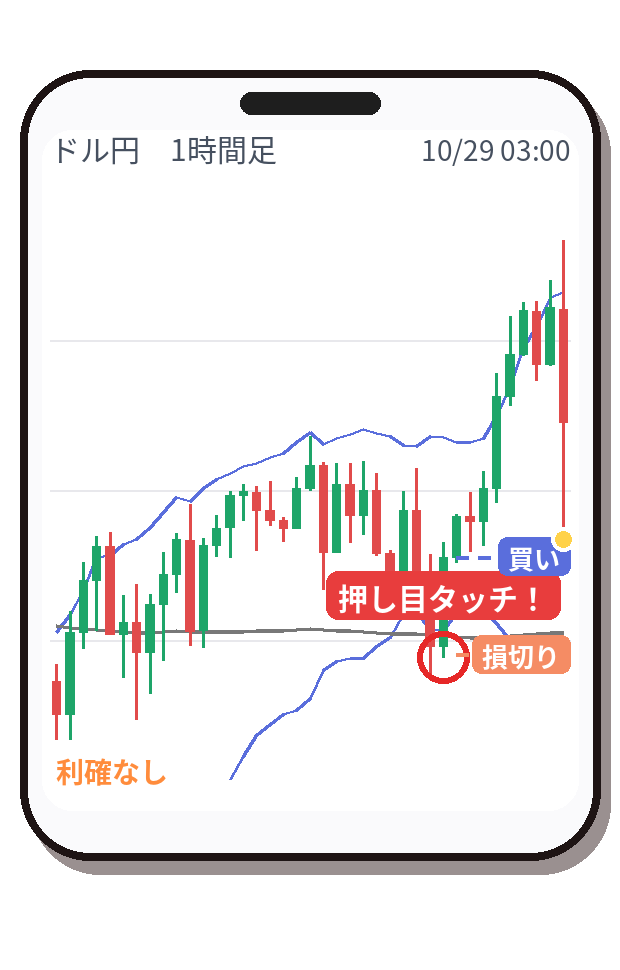

【ツギツギ】ドル円 買い → 追いかけ損切り +265円（2026/10/28）

「帰り道でもトレード！」
ツギツギ（担当：押し目C（下半分・0.3ATR））が、10月28日 19時ごろにドル円を買い。結果は追いかけ損切り・+265円（1万通貨の目安）でした。
今回のトレード
| 通貨 | ドル円 |
|---|---|
| 方向 | 買い |
| エントリー | 10/28 19:00 157.841円 |
| 最初の損切り | 157.685円 |
| 利確 | なし（追いかけ） |
| 決済 | 10/29 04:00ごろ 157.870円（追いかけ損切り） |
| 保有時間 | 約9時間 |
| 成績 | +0.17R（リスク1回分を1とした成績） |
| 損益の目安 | +265円（1万通貨） |
なぜ入った？ 戦法「浅い押し目で即エントリー」
バンドの下半分まで来たら、もう入ります。押し目の中でいちばん回数が多いタイプ。
今回のチャートでは「押し目タッチ！」のサインが出ています（下の図の丸印）。

結果
値段が伸びたあと、引き上げておいた損切り（追いかけ）に届いて決済しました。
「はい次！」
「次もすぐ来るよ！」
「次もすぐ来るよ！」